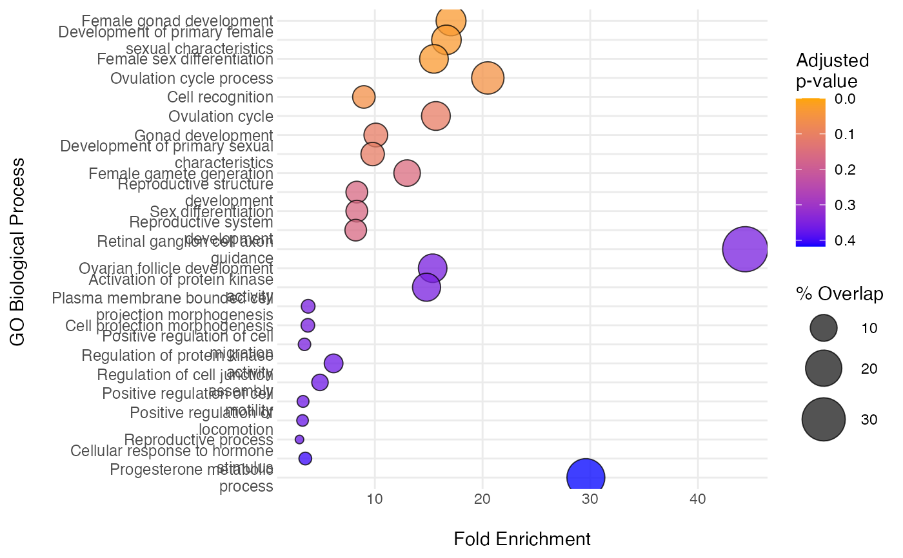
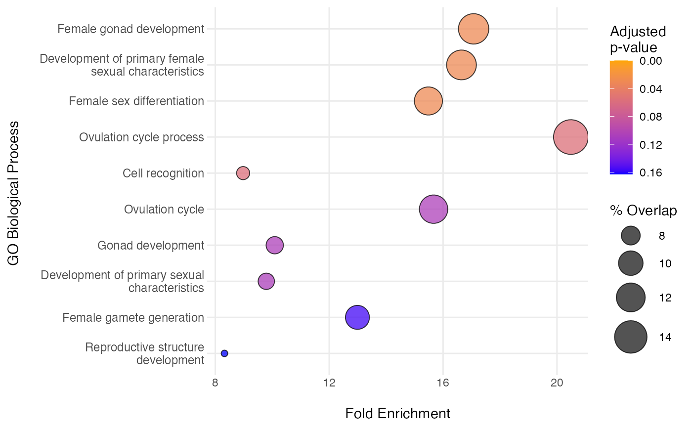
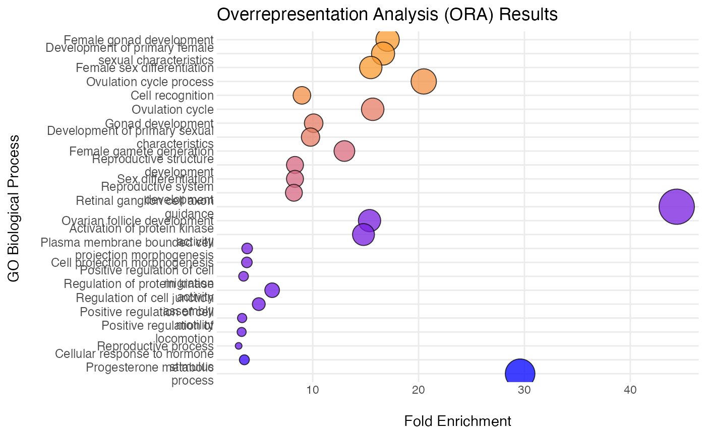

Creates a bubble plot to display results of ORA. Bubble size corresponds
to the percentage of features in the feature set/pathway that are provided as
"interesting" features to somaORA(). Bubbles are colored by adjusted
p-value. One bubble is plotted per pathway.
Usage
plotBubble(
ora_results,
n_pathways = 25,
font_size = 9,
bubble_color_low = "orange",
bubble_color_high = "blue",
path_labels = c("name", "id")
)Arguments
- ora_results
A
data.frameof ORA results fromsomaORA().- n_pathways
The number of feature sets/pathways to be included in the plot. Default is 25.
- font_size
Numeric. Base font size for the plot. Default is 12.
- bubble_color_low
Character. Color to use for low (i.e. small) p-values. Default is "orange".
- bubble_color_high
Character. Color to use for high (i.e. larger) p-values. Default is "blue".
- path_labels
Character. String indicating the identifier to be used for each feature set (on the y axis). Options include "name" (the full feature set name) or "id" (the set identifier/accession number). Default is "name".
Value
A ggplot object of the ORA bubble plot. Rows are sorted by
the adjusted p-value and "% Overlap", i.e. percentage of the pathway
corresponding to "interesting" features (those provided to the features
argument of somaORA()).
Examples
deg <- head(t_tests$EntrezGeneSymbol, 50)
bg <- SomaDataIO::getAnalyteInfo(example_data_11k)$EntrezGeneSymbol
res <- somaORA(features = deg,
universe = bg)
plotBubble(res)

# Display fewer feature sets
plotBubble(res, n_pathways = 10)

# Use GO or MSigDb accession identifiers, instead of full names
plotBubble(res, path_labels = "id")

# Other plot customizations can be performed using ggplot2
plotBubble(res) +
ggplot2::ggtitle("Overrepresentation Analysis (ORA) Results") +
ggplot2::theme(legend.position = "none")
